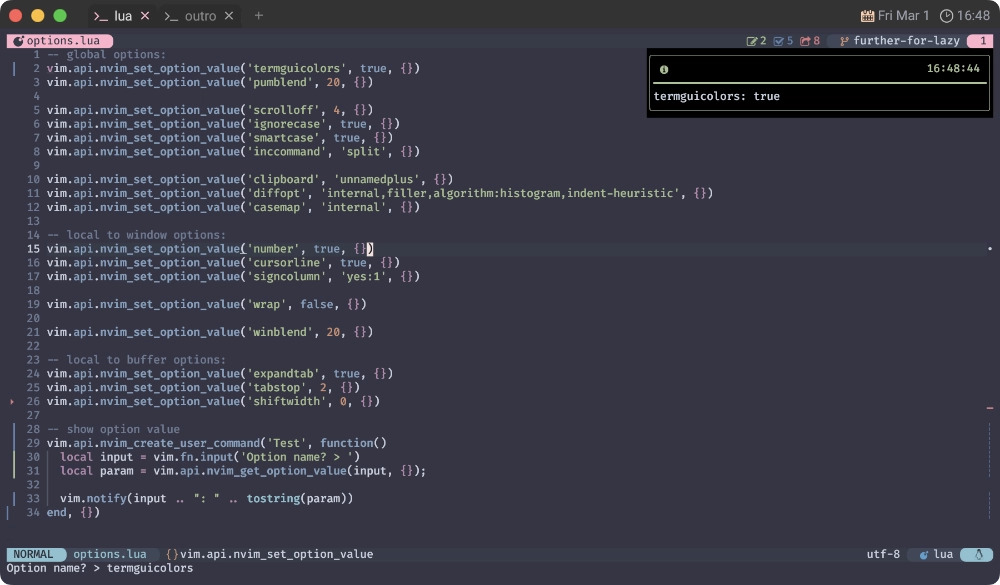

💇🏻♀️ nvim_get_option_value
このサイトでは以前、nvim_buf_get_optionを使用したコードを提示していたのですが、これは既にdeprecatedです。
なので必然的にnvim_get_option_valueへお乗り換えです 🚅
...まあ、そうは言っても終盤に来て説明されるまでもない事ですので、すぐ終わっちゃいます😆
nvim_get_option_value({name}, {opts}) *nvim_get_option_value()*
Gets the value of an option. The behavior of this function matches that of
|:set|: the local value of an option is returned if it exists; otherwise,
the global value is returned. Local values always correspond to the
current buffer or window, unless "buf" or "win" is set in {opts}.
option の値を取得する。
この関数の動作は |:set| と同じです。
オプションが存在する場合はローカル値が返され、存在しない場合はグローバル値が返されます。
ローカル値は、{opts} で "buf" または "win" が設定されていない限り、常に現在のバッファまたはウィンドウに対応します。
Parameters: ~
• {name} Option name
• {opts} Optional parameters
• scope: One of "global" or "local". Analogous to |:setglobal|
and |:setlocal|, respectively.
• win: |window-ID|. Used for getting window local options.
• buf: Buffer number. Used for getting buffer local options.
Implies {scope} is "local".
• filetype: |filetype|. Used to get the default option for a
specific filetype. Cannot be used with any other option.
Note: this will trigger |ftplugin| and all |FileType|
autocommands for the corresponding filetype.
Return: ~
Option value
そういえば、先日(と言っても結構前なんだけど) 新宿に降りて、西口側に行ったんです。
あの辺ってなんか絶賛再開発中🏗️ でなんかガチャガチャしてるんですよね〜。
それを横目に階段で地上に上がろうとしたんですが...。
封鎖されている...❗ほぼ全て😑
ここでふと思うわけです。
まあ🤭 Prison 👮♀️
よしやろうぜ 相棒 急げ
お前がやるつもりなら 他二の次
囲う奴らなんてうるさいだけだ 自分では何もやっちゃいない
なんならやるまでしとけよ秘密に
誰かと確認なんて不要
自分のジャッジだけで 突き破れ
ド派手なフェイクやろうより
クールに抉れ 奴らの過ちを突き付けろ
🤽🏻♂️ Try
簡単ではあるんですけど、やっぱ確信は欲しいので「試しに動かしてみよー。」って思うわけです。
なので、こんなコードを カ キ マ シ タ ァ❗❗
vim.api.nvim_create_user_command('Example', function()
local input = vim.fn.input('Option name? > ')
local param = vim.api.nvim_get_option_value(input, {});
vim.notify(input .. ": " .. tostring(param))
end, {})
多分こんな感じでしょう❓
早速試してみましょう❗
...ってしたら、なんか実在する適当なオプションを入力してあげてください😉

はい、いけました😆
俺の命は戦うことを諦めない
俺の命は愛に生きる
死ぬまで戦ってやるよ
孤立しようが笑っててやる
東京が獄中だろうと
俺はお前を灯そう
時が荒み 夜も昼も霞めていく
俺はお前を灯そう
あえて言う必要はない
🧑✈️ copilot-cmp
これでもう自信を持って扱えますね❗あとは簡単😊
このサイトで言うと、
copilot-cmpで示した
extensions/nvim-cmp-actions.luaで使ってるはずです。
local function has_copilot()
+ if vim.api.nvim_get_option_value('buftype', {}) == 'prompt' then
- if vim.api.nvim_buf_get_option(0, 'buftype') == 'prompt' then
return false
end
local line, col = unpack(vim.api.nvim_win_get_cursor(0))
return col ~= 0 and vim.api.nvim_buf_get_text(0, line - 1, 0, line - 1, col, {})[1]:match '^%s*$' == nil
end
まあ、こんなもんでしょ😇
内容なんて、もうほぼ無いよう🤣
ああ 現実には何もないな
お前もそんな気分なんだろ
打ちのめされ, 愛は踏みにじられ...
無駄にした時間を取り戻すんだ
ああ 神なら分かってくれるかもしれない
俺は誰にも止められない
🎙️ LOST IN PARADISE
また時は過ぎている 唯一平等 もう無駄にしない
計画は完了するまで嘘でしかない
最高 頂く称号
誰かの予想軽々超えてはるか向こう
俺はやり遂げた あれもこれもそれも
もし逆境だとしても高みへ挑み続ける
なんていうかさあ...。
最近色々思うこともあるんだけど、他人の言葉を使って抗うのはわたしの弱さです。
東京地獄から楽園へ
そりゃ勝ちとるためなら戦うさ
今更やわなかけできるわけねぇだろぶちかませ
頭の中から現実に
変換していく綿密に
眠らず Action 0時過ぎ
この命が生み出す芸術品
自分でもびっくりするぐらい好き勝手やってるけど、どうか大目に見てください...😭
このサイトも、ようやく Endgame なんで❗
...理由になってねぇな🙄
🦸♀️ WILL RETURN
What the hell is this?
これは一体どういうことだ？
friday what are they firing at?
friday、奴らは何を撃っている？
Something just entered the upper atmosphere
今、何かが上層大気圏に突入しています
1: LOST IN PARADISE feat.AKLO: 日本のバンド ALI が Leo, Alex, Luthfi と共作し、TVアニメ版『呪術廻戦』のエンディングテーマとしてリリースした楽曲。 2021年、Los Angeles Angels の大谷翔平 (当時) が入場曲としても使用していた。 Wikipedia より